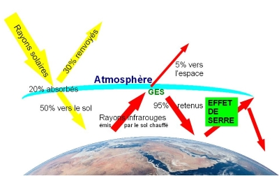

L'effet de serre
Le CO2 c’est un gaz produit lorsqu’on brûle de l’énergie fossile (charbon, pétrole, essence, diesel…). Même si, la voiture électrique n’émet pas de CO2 lorsqu’elle roule. Avant d’être mise sur la route, lors de sa construction, la voiture électrique a déjà produite une grosse quantité de CO2. 50 % de CO2 de plus à la production qu’une voiture thermique. Le rejet de CO2 pose des problèmes environnementaux tel que le dérèglement climatique.
Pour comprendre le dérèglement climatique, nous allons cherchez son origine dans l’effet de serre.
La Terre reçoit son énergie du soleil : une partie du rayonnement solaire est absorbé par la Terre. La Terre libère l’énergie ainsi reçue sous forme de rayonnement infrarouge réémis vers l’espace. Les gaz à effet de serre (GES), présents dans l’atmosphère, ont la propriété d’intercepter une partie de ce rayonnement infrarouge et de le réémettre, notamment en direction de la Terre. Ce phénomène naturel, appelé effet de serre, modifie le bilan radiatif de la Terre et permet d’obtenir à la surface de celle-ci une température moyenne de 15 °C, alors que sans lui la température serait de -18 °C.
Le phénomène naturel de l’effet de serre : schéma explicatif
Une augmentation des concentrations de GES dans l’atmosphère accroît leur opacité au rayonnement infrarouge : une plus grande partie de ce rayonnement est interceptée, modifiant ainsi l’équilibre : ce forçage radiatif est responsable du renforcement de l’effet de serre, qui se traduit par une augmentation moyenne de la température de l’atmosphère et par suite des changements climatiques.
Les activités anthropiques, qui conduisent à l’émission de GES en fortes quantités depuis 1750, sont responsables de cette augmentation des concentrations de GES, ce qui est a l'origine du dérèglement climatique.
Donc le dérèglement climatique est un phénomène global de transformation du climat caractérisé par une augmentation générale des températures moyennes.
Pour conclure, la voiture électrique émet du dioxyde de carbone lors de sa construction, ce qui provoque une augmentation de la concentration de gaz à effet de serre dans l'atomosphère, responsable du renforcement de l'effet de serre. Davantage de rayons infrarouges sont retenus dans l'atmosphère ayant pour conséquence un dérèglement climatique se manifestant avec une augmentation moyenne des températures à la surface de la Terre. L'augmentation des températures a des conséquences catastrophiques comme la fonte des glaciers, l'engloutissement d'îles...